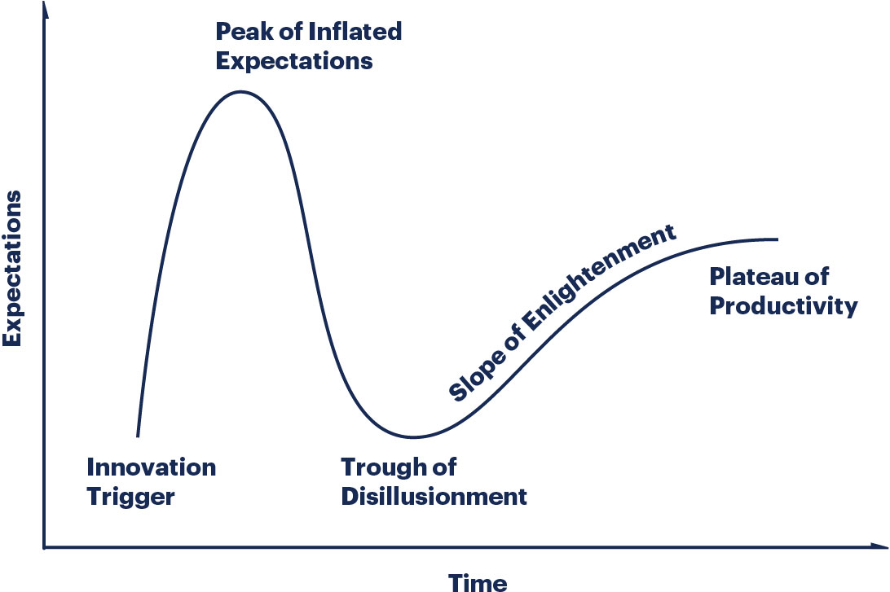

CQRS has been popular for quite a few years (more than a decade old at this point), and while it’s no longer in the hype phase of adoption, it still gets brought up quite a bit during architectural discussions for new projects (usually in conjunction with microservices). A few years after the pattern became popular, there was mounting criticism against it, mainly because of the complexity it introduces - with critics citing it as a typical example of over-engineering / premature optimization. As with most new technologies, this is captured very well by the Gartner hype cycle graph.

The adoption curve for microservices was similar: they were initially everywhere, then there was a backlash against the approach, and eventually teams began using them more judiciously. This pattern is typical for many new frameworks as well:
- Phase 1: Hey, look, a new shinny toy is out—I want to play with it.
- Phase 2: OK, this isn’t really what I expected, it’s really bad.
- Phase 3: Maybe we shouldn’t have used it for everything, but it does have a place for certain usecases.
Dismissing CQRS out of hand would be a mistake however, as it does serve a purpose, albeit a very specific one. The purpose of this article is to give a birds-eye view of the pattern, encourage its use where it’s suitable, and potentially dissuade developer teams from adopting it where it isn’t.
Architecture
Before CQRS we had CQS (Command Query Segregation) which is a pattern that can be attributed to Bertrand Mayer. You are probably using this pattern without even know you are — in a nutshell it posits that asking a question shouldn’t change the answer. This means you don’t want a method to mutate your state and return a value at the same time.
CQRS stands for Command Query Responsibility Segregation. It means that the read and write parts of the application are separated. Here are high-level schematics of the topologies of the two architectures, presented side by side.
At first look, CQRS looks significantly more complicated than the standard approach because not only are there two pipelines now, it also involves using two data stores. We’ll clarify the purpose behind this in a moment.
As a general rule of thumb, applications involve significantly more reads than writes. Also, it’s not possible to optimize our data model for reads and writes at the same time. Themore we imporove on read speed, by way of indexes, the slower the inserts become. Another approach to speed up reads is to denormalize your data, to avoid having to perform costly joins.
A Typical Example
Let’s look at a real world example: a post on social media has a series of comments but do you want to tie those comments to the post object or to the user making the post? If so, how do we scale? CQRS can be a solution here - in our view cache, we can duplicate the comments, one time for the article and another time for the user’s history actions. A notification can be sent to update the cached view.
Let’s look at a case where this might be needed:
So why not use a caching solution instead? The core value proposition of CQRS is the decoupling of the view model and the domain model in a distributed application.
For the sake of argument, let’s consider that our application uses at least dozens of servers, which means we need a scaling solution for it. A typical horizontal scaling strategy would be to partition the data based on user id, but the question then becomes: do we tie the comments to the user making them, or to the post which is in turn tied to another user. Also bear in mind that we want to avoid querying multiple nodes.
- The domain model is the primary source of truth, denormalized, and usually stored in a relational database.
- The view model contains data duplication and is normally stored in a fast document database.
This approach naturally lends itself to a microservice solution, where we can scale different parts of the application. Scaling out a relational database is complicated. Scaling out denormalized views is not.
There is significant overhead associated with implementing CQRS and in most cases, there’s no need to separate the reading and writing pipelines. And in fact, it can be argued that the main advantage of CQRS is the fact that we have two storage formats, one that makes reading faster and one that denormalizes the data, not two pipelines. The former can be seen as a view model and the latter should be the primary source of truth.
In a nutshell, CQRS allows you to take a distributed data model and agregate it in one or more view models (caches). An analogy that can be used here, albeit not a perfect one, is the difference between a primary database and star-schema databases, which are optimized for reports.
A Primer On Event Sourcing
The fundamental idea behind event sourcing is that the state of your application is given by a set of event objects. Let’s use an online store as an example.
We start with an empty catalog, and we define events such as:
- Adding support for new item types in the store catalog.
- Removing items from the supported catalog.
- Adding stock.
- Selling items.
Auditing is important when it comes to a wide variety of applications. You might be a financial controller. You might be maintainging an inspections sofwware and an audit trail is mandatory.
If your application is using “event sourcing”, then it’s also customary to use CQRS.
Materialized Views
This isn’t a new concept. It has been around in relational database systems for quite some time now. The idea behind it was always to precompute the result of queries in order to improve response time. Sure, adding indexes can go a long way in improving read performance (at the expense of write performance), but if you’re reading the same data set again and agin, it makes sense to store it. In fact, adding views to your application might be one of the most efficient ways to improve performance.
When we’re dealing with cloud native applications / distributed transactions etc., things are a bit more complicated. There is still value in the concept, but we can’t rely on our RDBMS system to do it for us — we’ll need to do it ourselves. A RDMS wil rely on its internal system of triggers — we’ll need a messaging system.
As mentioned in other articles, distributed systems rely heavily on denormalization / data duplication. So even if we don’t need to keep a ledger to track our actions, thing such as “fan-out” (distributing data in the feed of various users on social media on say Twitter require data duplicationd).
- You have the “primary source of truth”, which his what an individual user posted.
- And you also have a “materialized view”, which is the individual user’s feed.
As an approach, CQRS is useful when we want to achieve these “cloud native” materialized views.
Conclusion
As with most debates,
- The decision to use CQRS should not be taken lightly, because it entails significant development cost.
- It most likely makes sense to use it if you’re planning to scale your storage solution.
- CQRS can be used on a per microservice basis - not all microservices need to use it.